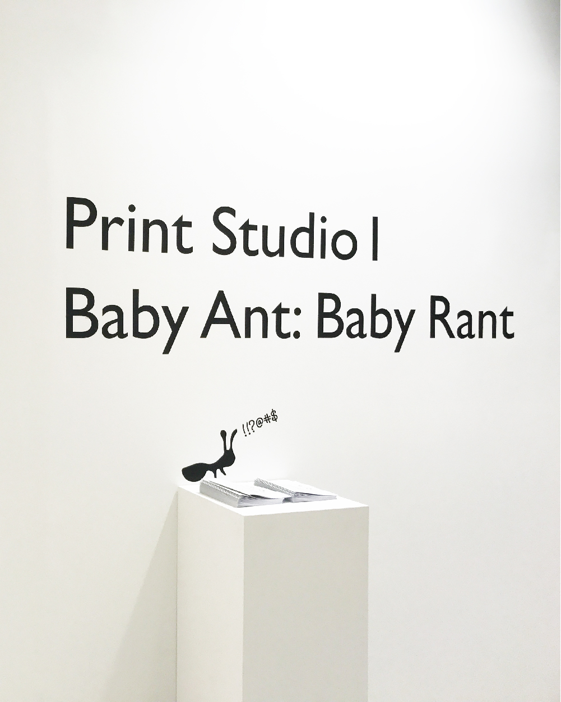
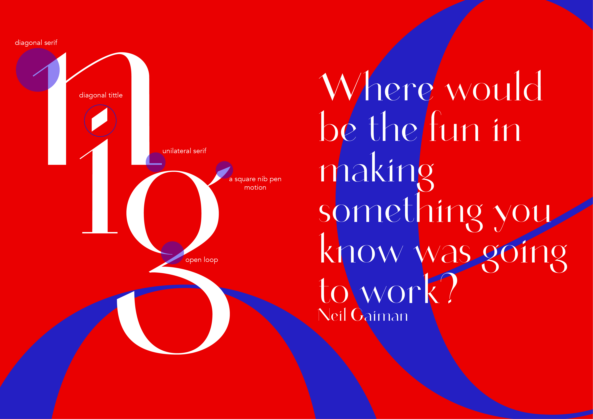
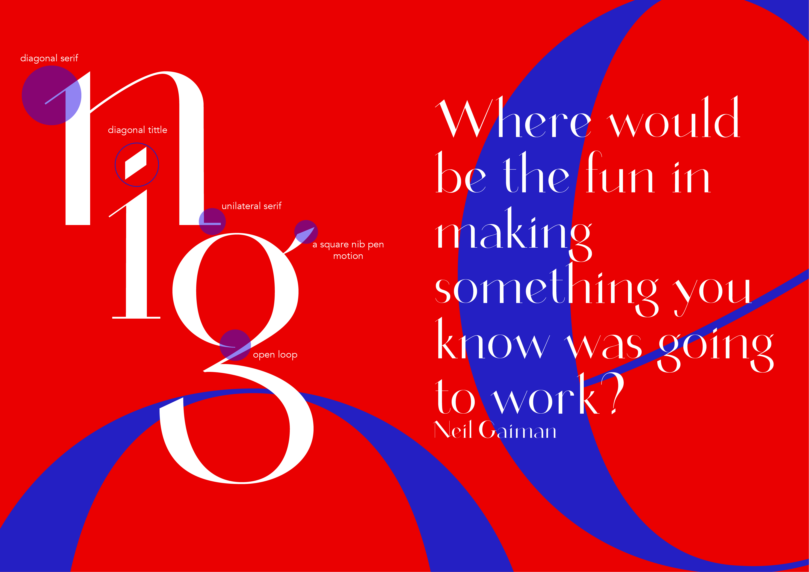

Cirque is a high contrast typeface primarily inspired by Didot. A requirement of of the assignment is to create a typeface based on our calligraphy practice with a square nib pen. Therefore, I created Cirque to resemble the strokes made with with a square nib pen, such as the diagonal serif or the stark contrast in stroke weight.
However, at the same time, Cirque is also modern thanks to the strokes and angles of the characters, which are very straight and sharp, such as the vertex of the ‘v’ or the unbracketed serifs. Cirque is best used in large sizes as a display font due to the extreme stroke contrast.
The idea for my final type specimen came from a quote by Neil Gaiman: “Where would be the fun in making something you knew was going to work?” The process of design and also of type design are those of exploration and delving into unknown territories, and mistakes are an essential part in the process because that is where the frustration comes from, but also where we derive fun and pride. Thus, for the type specimen, instead of making a poster on a computer, where I could freely edit anything in a blink of an eye, I turned to a tiny letterpress, where type is set entirely by hand and mistakes are an inevitable part. Accompanying the inkjet print and the letterpress type is a Lego block which invites curiosity about where it will stand.
For the time being, only the lowercase are available. In the near future, a complete typeface with capitals, numerals, and punctuations will be completed.
 
